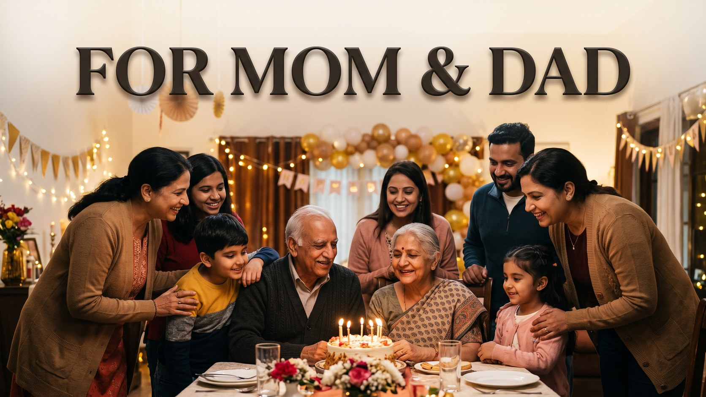

Happy Birthday Wishes in Urdu: Beautiful Birthday Duas & Messages
Published October 10, 2026 · Updated October 10, 2026 · By EventBuzz Team

A birthday wish in Urdu carries a softness that is hard to match. The word dua turns a greeting into a prayer for someone’s health, happiness and future. Every line below was written fresh in Urdu script, sorted by relationship: duas for family, wishes for friends, respectful lines for elders, sweet messages for a spouse, and short WhatsApp lines for when the cake is already being cut. If you prefer English, our main happy birthday wishes collection has messages for everyone, and many readers send one Urdu dua with one English line.
Birthday Duas for Family
For parents, siblings and the family members whose prayers have carried you through every year of your life.
- سالگرہ مبارک ہو! دعا ہے کہ اللہ آپ کی زندگی کو صحت، سکون اور بے شمار خوشیوں سے بھر دے۔
- پیارے ابو اور امی، آپ کی سالگرہ پر میری سب سے بڑی دعا یہی ہے کہ اللہ آپ کو لمبی عمر، اچھی صحت اور دل کا اطمینان عطا فرمائے۔
- میری پیاری بہن، سالگرہ مبارک! دعا ہے کہ یہ نیا سال تمہاری ہر نیک خواہش کو حقیقت بنا دے۔
- بھائی جان، سالگرہ مبارک ہو! اللہ آپ کو کامیابی، عزت اور خوشیوں بھری زندگی عطا کرے، اور ہمارا ساتھ ہمیشہ قائم رکھے۔
- پیاری فیملی کے سب سے پیارے فرد کو سالگرہ مبارک! آپ کی مسکراہٹ ہمارے گھر کی روشنی ہے، اللہ اسے ہمیشہ قائم رکھے۔
Birthday Wishes for Friends
Warm, cheerful lines for the friends who make every year easier and every memory better.
- سالگرہ مبارک ہو میرے یار! دعا ہے کہ یہ سال تمہارے لیے وہ کامیابیاں لائے جن کا تم نے ہمیشہ خواب دیکھا ہے۔
- دوست، تمہاری سالگرہ کا دن میری زندگی کے پسندیدہ دنوں میں سے ہے، کیونکہ اسی دن میرا بہترین ساتھی دنیا میں آیا۔ سالگرہ مبارک!
- دعا ہے کہ اس سال تمہاری محنت رنگ لائے، قسمت تم پر مہربان ہو اور ہنسی کبھی تمہارا ساتھ نہ چھوڑے۔ سالگرہ مبارک!
- نیا سال، نئی امیدیں اور وہی پرانی دوستی جو ہر سال کو خاص بنا دیتی ہے۔ میرے عزیز دوست کو سالگرہ بہت مبارک ہو!
- اللہ کرے تمہاری زندگی کا ہر دن گزشتہ دن سے روشن ہو اور ہر قدم پر کامیابی تمہارا استقبال کرے۔ سالگرہ مبارک!
Respectful Birthday Lines for Elders
Gentle, honoured words for grandparents, elders and teachers, where gratitude matters as much as the greeting.
- محترم بزرگو، سالگرہ مبارک ہو۔ آپ کی دعائیں اور شفقت ہماری زندگی کا سب سے قیمتی سرمایہ ہیں، اللہ آپ کو صحت اور لمبی عمر عطا فرمائے۔
- استاد محترم، سالگرہ مبارک! آپ کی رہنمائی نے ہماری زندگیوں کو راستہ دکھایا، دعا ہے کہ یہ سال آپ کے لیے عزت اور سکون لائے۔
- آپ کے تجربے اور محبت کے سائے میں ہماری ہر سالگرہ بھی مبارک ہو جاتی ہے۔ اللہ آپ کو ہمیشہ اپنے حفظ و امان میں رکھے۔
- پیارے دادا جان اور دادی جان، سالگرہ مبارک! آپ کی مسکراہٹ ہمارے گھر کی سب سے بڑی نعمت ہے، اللہ آپ کو ہمیشہ مسکراتا رکھے۔
Sweet Lines for Your Spouse or Partner
Soft, loving wishes for the person you would choose again in every year of life.
- میری زندگی کے سب سے خوبصورت انسان کو سالگرہ مبارک! دعا ہے کہ ہم آنے والے ہر سال یوں ہی ایک دوسرے کے ساتھ منائیں۔
- تمہاری سالگرہ پر میری دعا بہت سادہ ہے: اللہ تمہیں اتنی خوشیاں دے جتنی تم نے میری زندگی میں بھری ہیں، بلکہ اس سے بھی زیادہ۔
- سالگرہ مبارک ہو جان! تم میری دعاؤں کا وہ جواب ہو جس کا میں نے ہمیشہ انتظار کیا۔ اللہ ہمارا ساتھ ہمیشہ قائم رکھے۔
- ہر گزرتا سال تمہیں اور حسین بنا دیتا ہے اور میری محبت کو اور گہرا۔ میری دعا ہے کہ یہ سال تمہارے لیے نرمی، سکون اور کامیابی لائے۔
- تمہارے ساتھ ہر دن کسی جشن جیسا لگتا ہے، مگر آج کا دن صرف تمہارا ہے۔ سالگرہ بہت بہت مبارک، میری محبت!
Short Birthday Lines for WhatsApp
One line, full of heart, ready to copy, personalise with a name and send.
- سالگرہ مبارک! اللہ آپ کو صحت، خوشیاں اور لمبی عمر عطا فرمائے۔ 🎂
- دعا ہے کہ یہ نیا سال آپ کی زندگی میں روشنی، سکون اور کامیابی لے کر آئے۔
- سالگرہ مبارک ہو! آپ کی ہر جائز خواہش اس سال پوری ہو، آمین۔
- رب آپ کی زندگی کو خوشیوں سے بھر دے اور ہر غم سے دور رکھے۔ سالگرہ مبارک!
- آپ کی مسکراہٹ ہمیشہ قائم رہے اور کامیابی آپ کے قدم چومے۔ سالگرہ مبارک!
- دل کی گہرائیوں سے سالگرہ مبارک! اللہ آپ کو دنیا و آخرت کی بھلائیاں عطا فرمائے۔
Remember, the most beautiful birthday dua is the one that carries a name, one true memory and one sincere prayer for the year ahead.
Frequently Asked Questions
How do you say happy birthday in Urdu?
The most common greeting is written in Urdu script at the start of almost every line on this page, and it literally wishes the person a blessed birthday. Adding a short dua for health and a long life makes it warmer and more personal.
What is a respectful birthday wish for elders in Urdu?
One that thanks them for their guidance and prayers, and asks Allah to bless them with health and a long life. The elders section above is written in exactly that respectful tone.
Can I copy these Urdu birthday wishes for WhatsApp?
Yes. Every line is original to EventBuzz and free for personal use in messages, cards and captions.
How can I make an Urdu birthday wish more personal?
Add the person’s name, one shared memory, and a specific prayer for something they truly want this year.
Where can I find birthday wishes for the whole family in English?
Our birthday wishes for family collection has warm English messages for parents, siblings, grandparents and children, and you can pair one with an Urdu dua from this page.
Conclusion
A birthday message in Urdu is a dua that stays in the heart long after the cake is finished. Choose a line, add a name, and send it with love.
Keep celebrating with these guides:
Salgirah Mubarak, may every birthday bring health, peace and true love.